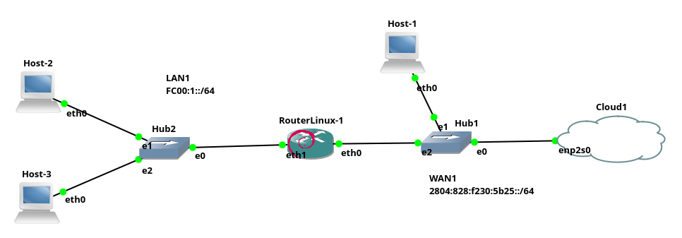

IPv6 no Linux - Configuração de Clientes, NAT e endereço stateless
Parece que o IPv6 está cada vez mais próximo de tomar o seu lugar na Internet, ou seja, o IPv6 está ganhando forças para substituir o IPv4 e assim resolver o problema da falta de endereços IPs válidos na Internet.
Desta forma, é importante começar a dominar o mínimo de endereçemento IPv6. Neste material será explicado como:
- Configurar endereços, rotas e DNS em hosts Linux, de forma manual e automática;
- Configurar um roteador Linux com NAT para IPv6;
- Instalar e configurar um servidor que fornece configuração IPv6 de forma automática e sem controle de estado aos clientes da rede.
Para tanto, utilizaremos o cenário de rede apresentado a seguir (ver Figura 1), como exemplo:
|  |
|---|
| Figura 1 - Cenário de rede do Exemplo IPv6 |
A rede da Figura 1 é composta basicamente por duas redes, um roteador e hosts clientes, sendo esses:
- LAN1: que simboliza uma rede local privada, tal como uma casa ou pequena empresa;
- WAN1: que representa uma rede pública que interconecta a LAN à Internet.
- RouterLinux-1: este é um roteador Linux utilizado para Interconectar a LAN1 à WAN1 e consequentemente à Internet. Neste será configurado o NAT, e o servidor de configuração automática de rede dos clientes IPv6.
- Hosts[1-3]: Todos os hosts da rede são Linux (Debian 10). O Host-1 está na WAN1 e tem como roteador um computador que está dentro da nuvem (cloud1). Os demais hosts, estão na LAN1 que por sua vez está atrás do NAT que será configurado no RoteadorLinux-1.
Todo esse cenário de rede foi implementado no GNS3.
As configurações dos hosts e serviços do cenários IPv6 proposto são dadas a seguir:
Configuração do Host-1
Vamos iniciar a configuração com o Host-1, que é um host conectado à WAN1. Tal rede tem como roteador um host que está dentro da nuvem (cloud) do cenário. O Host-1 pode ser configurado utilizando-se um servidor DHCP que também está oculto na rede. A configuração do Host-1 será feita de forma automática, via DHCP, tal como pode ser visto a seguir, com o comando dhcpcd:
root@Host-1:/# dhcpcd -6 -i eth0
DUID 00:04:4c:4c:45:44:00:36:32:10:80:34:b3:c0:4f:35:34:32
eth0: IAID f6:e8:46:c9
eth0: soliciting an IPv6 router
eth0: Router Advertisement from fe80::c6e9:84ff:fe66:510e
eth0: adding address fd1b:e114:982d:0:bf3:3344:47af:8cbe/64
eth0: adding route to fd1b:e114:982d::/64
eth0: soliciting a DHCPv6 lease
eth0: Router Advertisement from fe80::1
eth0: adding address 2804:828:f230:5b25:96ae:4ff3:e9fd:cf62/64
eth0: adding route to 2804:828:f230:5b25::/64
eth0: adding default route via fe80::1
eth0: ADV fd1b:e114:982d::5f8/128 from fe80::c6e9:84ff:fe66:510e
eth0: accepted reconfigure key
eth0: REPLY6 received from fe80::c6e9:84ff:fe66:510e
eth0: adding address fd1b:e114:982d::5f8/128
eth0: renew in 21600, rebind in 34560, expire in 4294967295 seconds
forked to background, child pid 111
O comando dhcpcd -6 -i eth0 foi utilizado para obter apenas configurações de rede IPv6, sendo as opções deste comando do exemplo:
-6, diz para utilizar apenas IPv6 (não IPv4);-i eth0, informa para fazer o pedido DHCP, apenas na interfaceeth0, que é a única no hosts clientes do cenário.
Já a saída do comando anterior, mostra que o pedido ao servidor DHCP, foi atendido com sucesso, já que por exemplo, foram fornecidos alguns endereços IPs, tais como:
eth0: adding address 2804:828:f230:5b25:96ae:4ff3:e9fd:cf62/64.
Vamos verificar quais foram as configurações de rede obtidas via IPv6:
root@Host-1:/# ip -6 address
1: lo: <LOOPBACK,UP,LOWER_UP> mtu 65536 state UNKNOWN qlen 1000
inet6 ::1/128 scope host
valid_lft forever preferred_lft forever
8: eth0: <BROADCAST,MULTICAST,UP,LOWER_UP> mtu 1500 state UNKNOWN qlen 1000
inet6 fd1b:e114:982d::5f8/128 scope global noprefixroute
valid_lft forever preferred_lft forever
inet6 2804:828:f230:5b25:96ae:4ff3:e9fd:cf62/64 scope global dynamic mngtmpaddr noprefixroute
valid_lft 86094sec preferred_lft 3294sec
inet6 fd1b:e114:982d:0:bf3:3344:47af:8cbe/64 scope global mngtmpaddr noprefixroute
valid_lft forever preferred_lft forever
inet6 fd1b:e114:982d:0:ac81:f6ff:fee8:46c9/64 scope global dynamic mngtmpaddr
valid_lft forever preferred_lft forever
inet6 2804:828:f230:5b25:ac81:f6ff:fee8:46c9/64 scope global deprecated dynamic mngtmpaddr
valid_lft 72508sec preferred_lft 0sec
inet6 fe80::ac81:f6ff:fee8:46c9/64 scope link
valid_lft forever preferred_lft forever
Na saída do comando ip -6 address anterior, são apresentadas duas interfaces de rede: lo e eth0. A primeira é a interface de loopback que tem o endereço IPv6 ::1. Já a outra é a primeira interface Ethernet, no caso a eth0, tal interface possui os seguintes IPs:
fd1b:e114:982d::5f8,fd1b:e114:982d:0:bf3:3344:47af:8cbe,fd1b:e114:982d:0:ac81:f6ff:fee8:46c9: Esses são endereços locais únicos (Unique Local Address - ULA). Tais endereços iniciam com fd se forem atribuídos localmente (ex. pelo próprio host). Já se iniciasse com fc, seriam atribuídos por uma organização (ex. o administrador de rede da empresa). Tanto fd quando fc representam os antigos endereços IPs privados, ou seja, não roteáveis na Internet (10.0.0.0/8, 172.16.0.0/12 e 192.168.0.0/16);fe80::ac81:f6ff:fee8:46c9: Tal endereço é um link local, ou seja, esse endereço não é roteável entre redes. Tal endereço é atribuído automaticamente pelo próprio computador e se um roteador receber pacotes IPv6 com esse endereço, ele não deve roteá-lo.2804:828:f230:5b25:96ae:4ff3:e9fd:cf62: Esse é um endereço unicast global (Global Unicast Address), ou seja, é um endereço IP público, válido na Internet;
Bem, como é possível ver, há vários endereços IPv6 atribuídos à uma única interface de rede, no exemplo a eth0. Tentando resumir, no geral quando liga-se um computador Linux na rede IPv6 pode ocorrer o seguinte:
- Mesmo se ele não tiver conectado à rede, ele receberá um endereço IPv6 iniciado com
fe80, tal endereço servirá apenas para conectar aos computadores da rede local. No exemplo foi o IPfe80::ac81:f6ff:fee8:46c9. É muito importante notar que o endereçofe80, foi concatenado com parte do endereço MAC do host, que no caso é:ae:81:f6:e8:46:c9(utilize o comandoip link, para ver o endereço MAC das interfaces). Tal concatenação, do endereço IPv6 com o endereço MAC da interface de rede é chamada de EUI-64 (Extended Unique Indetifier);A técnica EUI-64 é utilizada constantemente em endereços IPv6, então é muito importante entender e observar isso!;
- Ao conectar o computador à uma rede com roteador IPv6, é bem provável que este receberá automaticamente (sem precisar executar nenhum comando) IPs iniciados com:
fd1b- que é para conectar em outras redes locais - ULA, antigo IP privado. Que na saída foi o IPfd1b:e114:982d:0:ac81:f6ff:fee8:46c9;2804- que é um IP válido na Internet, mas para isso é necessário que o roteador esteja conectado à Internet e forneça tais IPs. Que no exemplo foi o IP2804:828:f230:5b25:ac81:f6ff:fee8:46c9. Neste ponto o computador provavelmente também terá configurada a rota padrão e já poderá acessar a Internet via endereço IP, mas talvez não navegará por nomes, o que geralmente inviabiliza o acesso “convencional” à Internet, pois essa normalmente se dá através de nomes e não de endereços IPs.
- Ao pedir diretamente a configuração de rede, por exemplo via comando
dhcpcd, será realizada então toda a configuração necessária para acessar a rede: IP, rota padrão e servidor de nomes. Isso é claro, caso exista servidores DHCP ou similares. Neste ponto, um servidor DHCP, pode fornecer:- Outro endereço IPv6 público, só que agora que não utiliza o final do endereço MAC (EUI-64), ou seja, é um IP que ele está controlando via DHCP (não stateless). No exemplo, foi fornecido o IP
2804:828:f230:5b25:96ae:4ff3:e9fd:cf62e o mesmo pode acontecer para um endereço ULA (privado), que no caso foi dado o IPfd1b:e114:982d:0:bf3:3344:47af:8cbe.
- Outro endereço IPv6 público, só que agora que não utiliza o final do endereço MAC (EUI-64), ou seja, é um IP que ele está controlando via DHCP (não stateless). No exemplo, foi fornecido o IP
Vamos conferir a rota padrão e o servidor de nomes conseguidos via DHCP:
- Rota padrão:
root@Host-1:/# ip -6 route
2804:828:f230:5b25::/64 dev eth0 proto ra metric 208 pref medium
fd1b:e114:982d::/64 dev eth0 proto ra metric 208 mtu 1500 pref medium
fe80::/64 dev eth0 proto kernel metric 256 pref medium
default via fe80::1 dev eth0 proto ra metric 208 pref medium
Na saída anterior do comando ip -6 route, são apresentadas rotas para as redes 2804:828:f230:5b25::/64, fd1b:e114:982d::/64 e fe80::/64, que são redes referentes aos IPs que obtivemos de forma automática. Talvez a rota mais importante a ser notada é à default, que permite que este computador se conecte à outras redes. Assim, o endereço fe80::1 deve ser um IP atribuído ao roteador que está dentro do cloud.
- Servidor de nomes (DNS):
root@Host-1:/# cat /etc/resolv.conf
# Generated by resolvconf
nameserver fd1b:e114:982d::1
nameserver fe80::1%eth0
Na saída obtida anteriormente, observa-se que o Host-1 foi configurado para utilizar dois servidores de nomes (nameservers), sendo esses: fd1b:e114:982d::1 e fe80::1, ambos devem se referir ao roteador que está escondido dentro da nuvem (cloud).
Teste de conectividade do Host-1
Agora vamos ver se o Host-1 consegue se conectar à Internet, vamos fazer isso através do comando ping, “pingando” um nome na Internet, tal como:
root@Host-1:/# ping www.google.com.br
PING www.google.com.br(2800:3f0:4001:82f::2003 (2800:3f0:4001:82f::2003)) 56 data bytes
64 bytes from 2800:3f0:4001:82f::2003 (2800:3f0:4001:82f::2003): icmp_seq=1 ttl=118 time=15.2 ms
64 bytes from 2800:3f0:4001:82f::2003 (2800:3f0:4001:82f::2003): icmp_seq=2 ttl=118 time=16.3 ms
64 bytes from 2800:3f0:4001:82f::2003 (2800:3f0:4001:82f::2003): icmp_seq=3 ttl=118 time=14.9 ms
Dada esta resposta positiva (o comando ping apresentando tempo de ida e volta dos pacotes), confirmamos que a conexão IPv6 com a Internet foi bem sucedida.
Neste cenário com apenas interface texto seria possível testar o acesso à Internet, utilizando por exemplo um navegador texto, tal como o
lynx, por exemplolynx www.google.com.br.
A seguir vamos configurar o roteador Linux, para que este dê acesso à Internet para a LAN1.
Configuração do RouterLinux-1
O RouterLinux, é um computador com quatro placas Ethernet, sendo a primeira (eth0) conectada à WAN1/Internet e a segunda (eth1) conectada à LAN1. Esse Linux é um Debian 10, assim como todos os outros hosts do cenário.
Então, para a configuração do RouterLinux, vamos iniciar configurando as placas de rede. Primeiro vamos obter, via DHCP, os IPs fornecidos pela WAN1. Isso é feito da seguinte forma:
root@RouterLinux-1:/# dhcpcd -6 -i eth0
DUID 00:04:4c:4c:45:44:00:36:32:10:80:34:b3:c0:4f:35:34:32
eth0: IAID 7b:ec:eb:b3
eth1: IAID e7:a8:c1:69
eth2: IAID f2:de:73:dd
eth3: IAID 22:6b:69:ad
eth1: soliciting an IPv6 router
eth3: soliciting an IPv6 router
eth0: soliciting an IPv6 router
eth0: Router Advertisement from fe80::c6e9:84ff:fe66:510e
eth0: adding address fd1b:e114:982d:0:39ab:6d36:ad0b:4ad8/64
eth0: adding route to fd1b:e114:982d::/64
eth0: soliciting a DHCPv6 lease
eth0: Router Advertisement from fe80::1
eth0: adding address 2804:828:f230:5b25:2b38:7c34:671f:4c1e/64
eth0: adding route to 2804:828:f230:5b25::/64
eth0: adding default route via fe80::1
eth2: soliciting an IPv6 router
eth0: ADV fd1b:e114:982d::b7b/128 from fe80::c6e9:84ff:fe66:510e
eth0: accepted reconfigure key
eth0: REPLY6 received from fe80::c6e9:84ff:fe66:510e
eth0: adding address fd1b:e114:982d::b7b/128
eth0: renew in 21600, rebind in 34560, expire in 4294967295 seconds
forked to background, child pid 121
O que foi feito anteriormente, é o mesmo procedimento realizado no Host-1, explicado anteriormente. Lembrando que isso já vai configurar o endereço IP da eth0, a rota padrão e o servidor de nomes - tudo de forma automática, via DHCP.
Configurando IP manualmente, roteamento IPv6 e NAT IPv6
Anteriormente, na eth0, obtivemos as configurações via DHCP, mas já na eth1, não dá para pegar essa configuração da mesma forma, já que a princípio os pacotes DHCP não passam de uma rede para outra (da LAN1 para a WAN1). Então vamos configurar a seguir:
- Endereço IPv6 da
eth1; - Habilitar o roteamento IPv6;
- Configurar o NAT.
root@RouterLinux-1:/# ip -6 address add fc00:1::1/64 dev eth1
root@RouterLinux-1:/# echo 1 > /proc/sys/net/ipv6/conf/all/forwarding
root@RouterLinux-1:/# ip6tables -t nat -A POSTROUTING -o eth0 -j MASQUERADE
Nos comandos anteriores, temos:
- Configuramos a
eth1com o IPfc00:1::1/64. Esse será o IP desse roteador na LAN1. - Para um host Linux trabalhar como roteador é necessário ativar tal função, isso é feito no arquivo
/proc/sys/net/ipv6/conf/all/forwarding, colocando o conteúdo desse em 1 - caso seja 0, o roteamento está desabilitado; - Para a LAN1, foi dado uma faixa de IP ULA/privada, que não é roteável na Internet (no caso
fc00:1::/64). Assim, tal rede não poderia acessa a Internet, desta forma, para que a LAN1 possa acessar a Internet vamos utilizar um NAT, dizendo viaiptables, que tudo que for sair para a Internet/WAN1 (-o eth0), deve receber o IP válido na Internet que estiver naeth0, neste caso é o IP2804:828:f230:5b25:96ae:4ff3:e9fd:cf62.
Com IPv6 não seria necessário utilizar o NAT para acessar a Internet, mas de qualquer forma o NAT existe no IPv6 e vamos utilizá-lo aqui neste exemplo, já que não estamos subdividindo a rede IPv6 que obtivemos do provedor. Mesmo com o overhead do NAT, ele ainda é interessante no IPv6 por tornar a rede oculta, dentre outros benefícios.
Os comandos a seguir mostram como ficaram as configurações realizadas até agora no Router-Linux:
- Verificando os IPs das interfaces de Rede:
root@RouterLinux-1:/# ip a 1: lo: <LOOPBACK,UP,LOWER_UP> mtu 65536 qdisc noqueue state UNKNOWN group default qlen 1000 link/loopback 00:00:00:00:00:00 brd 00:00:00:00:00:00 inet 127.0.0.1/8 scope host lo valid_lft forever preferred_lft forever inet6 ::1/128 scope host valid_lft forever preferred_lft forever 6: eth0: <BROADCAST,MULTICAST,UP,LOWER_UP> mtu 1500 qdisc fq_codel state UNKNOWN group default qlen 1000 link/ether 82:de:7b:ec:eb:b3 brd ff:ff:ff:ff:ff:ff inet6 fd1b:e114:982d::b7b/128 scope global noprefixroute valid_lft forever preferred_lft forever inet6 2804:828:f230:5b25:2b38:7c34:671f:4c1e/64 scope global dynamic mngtmpaddr noprefixroute valid_lft 86336sec preferred_lft 3536sec inet6 fd1b:e114:982d:0:39ab:6d36:ad0b:4ad8/64 scope global mngtmpaddr noprefixroute valid_lft forever preferred_lft forever inet6 fd1b:e114:982d:0:80de:7bff:feec:ebb3/64 scope global dynamic mngtmpaddr valid_lft forever preferred_lft forever inet6 2804:828:f230:5b25:80de:7bff:feec:ebb3/64 scope global dynamic mngtmpaddr valid_lft 85770sec preferred_lft 2970sec inet6 fe80::80de:7bff:feec:ebb3/64 scope link valid_lft forever preferred_lft forever 9: eth1: <BROADCAST,MULTICAST,UP,LOWER_UP> mtu 1500 qdisc fq_codel state UNKNOWN group default qlen 1000 link/ether b2:95:e7:a8:c1:69 brd ff:ff:ff:ff:ff:ff inet6 fc00:1::1/64 scope global valid_lft forever preferred_lft forever inet6 fe80::b095:e7ff:fea8:c169/64 scope link valid_lft forever preferred_lft forever ... - Verificando as rotas IPv6:
root@RouterLinux-1:/# ip -6 route
2804:828:f230:5b25::/64 dev eth0 proto ra metric 206 pref medium
fc00:1::/64 dev eth1 proto kernel metric 256 pref medium
fd1b:e114:982d::/64 dev eth0 proto ra metric 206 mtu 1500 pref medium
fe80::/64 dev eth0 proto kernel metric 256 pref medium
fe80::/64 dev eth1 proto kernel metric 256 pref medium
fe80::/64 dev eth2 proto kernel metric 256 pref medium
fe80::/64 dev eth3 proto kernel metric 256 pref medium
default via fe80::1 dev eth0 proto ra metric 206 pref medium
- Verificando o DNS:
root@RouterLinux-1:/# cat /etc/resolv.conf
# Generated by resolvconf
nameserver fd1b:e114:982d::1
nameserver fe80::1%eth0
- Verificando conectividade com a Internet:
root@RouterLinux-1:/# ping www.google.com.br
PING www.google.com.br(2800:3f0:4001:82f::2003 (2800:3f0:4001:82f::2003)) 56 data bytes
64 bytes from 2800:3f0:4001:82f::2003 (2800:3f0:4001:82f::2003): icmp_seq=1 ttl=117 time=15.0 ms
64 bytes from 2800:3f0:4001:82f::2003 (2800:3f0:4001:82f::2003): icmp_seq=2 ttl=117 time=14.8 ms
64 bytes from 2800:3f0:4001:82f::2003 (2800:3f0:4001:82f::2003): icmp_seq=3 ttl=117 time=17.7 ms
Os comandos e as saídas apresentadas anteriormente são bem similares ao que foi feito em Host-1. A única grande diferença é que temos um IP em eth1, que não existia no Host-1.
Assim, dadas as configurações no RouterLinux-1, vamos ver se esse realmente está funcionando como roteador para LAN1.
Host-2
O Host-2, é um computador Linux na LAN1, vamos configurá-lo manualmente para que este utilize o RouterLinux-1 para acessa à Internet. Isso é feito basicamente os três comandos a seguir:
root@Host-2:/# ip -6 address add fc00:1::2/64 dev eth0
root@Host-2:/# ip -6 route add default via fc00:1::1
root@Host-2:/# echo nameserver 2606:4700:4700::1111 > /etc/resolv.conf
Nos comandos anteriores, em ordem fizemos o seguinte:
- Atribui o IP
fc00:1::2/64ao host; - Informa que a rota padrão é o RouterLinux-1 (
fc00:1::1); - Configura como servidor de nomes o
2606:4700:4700::1111.
Vamos ver como ficaram essas configurações:
- IP do host:
root@Host-2:/# ip -6 address show dev eth0
7: eth0: <BROADCAST,MULTICAST,UP,LOWER_UP> mtu 1500 qdisc fq_codel state UNKNOWN group default qlen 1000
inet6 fc00:1::2/64 scope global
valid_lft forever preferred_lft forever
inet6 fe80::54ae:67ff:fec4:a032/64 scope link
valid_lft forever preferred_lft forever
- Rotas:
root@Host-2:/# ip -6 route
fc00:1::/64 dev eth0 proto kernel metric 256 pref medium
fe80::/64 dev eth0 proto kernel metric 256 pref medium
default via fc00:1::1 dev eth0 metric 1024 pref medium
- Servidor DNS:
root@Host-2:/# cat /etc/resolv.conf
nameserver 2606:4700:4700::1111
Por fim, no Host-2, vamos realizar o teste de conectividade:
root@Host-2:/# ping www.google.com
PING www.google.com(2800:3f0:4001:82d::2004 (2800:3f0:4001:82d::2004)) 56 data bytes
64 bytes from 2800:3f0:4001:82d::2004 (2800:3f0:4001:82d::2004): icmp_seq=1 ttl=117 time=14.9 ms
64 bytes from 2800:3f0:4001:82d::2004 (2800:3f0:4001:82d::2004): icmp_seq=2 ttl=117 time=17.6 ms
Com o resultado obtido, significa que o Host-2 foi configurado com sucesso e principalmente que o RouterLinux-1 está funcionando como roteador e fazendo NAT dos pacotes que saem da LAN1 em direção da WAN1 ou da Internet. ;-)
Auto-configuração do IPv6
Fizemos a configuração manual no Host-2 na LAN1, isso é legal, mas normalmente se espera que a configuração de rede atualmente seja automática. Bem isso no IPv4 era conseguido basicamente com o DHCP, que tinha que manter uma lista de clientes e quais IPs ele havia emprestado, mas no IPv6 utilizando o EUI-64, é possível fazer a configuração automática da rede, sem ter que controlar a atribuição de IPs (stateless). Vamos fazer isso aqui utilizando um serviço chamado RADVD.
Bem, para contextualizar, antes de configurar o RADVD, no RouterLinux-1, se tentarmos obter as configurações de rede no Host-3, o resultado é esse:
- Tentando obter um IP no Host-3
root@Host-3:/# dhcpcd -6 -i eth0
DUID 00:04:4c:4c:45:44:00:36:32:10:80:34:b3:c0:4f:35:34:32
eth0: IAID d7:ad:1d:6f
eth0: soliciting an IPv6 router
eth0: no IPv6 Routers available
timed out
forked to background, child pid 55
Ou seja, não foi possível obter as configurações de forma automática. Então, vamos configurar um serviço no RouterLinux que forneça sem muitos controles (stateless) as configurações de rede para os hosts da LAN1.
Configurando o RADVD
Para instalar o Route Advertisement Daemon (RADVD) para IPv6, vamos fazer o seguinte no RouterLinux-1, com o seu Debian:
- Atualizar a base de pacotes:
root@RouterLinux-1:/# apt update
Hit:1 http://deb.debian.org/debian bullseye InRelease
Get:2 http://deb.debian.org/debian-security bullseye-security InRelease [48.4 kB]
Get:3 http://deb.debian.org/debian bullseye-updates InRelease [44.1 kB]
Get:4 http://deb.debian.org/debian-security bullseye-security/main amd64 Packages [273 kB]
Fetched 366 kB in 1s (727 kB/s)
Reading package lists... Done
Building dependency tree... Done
Reading state information... Done
2 packages can be upgraded. Run 'apt list --upgradable' to see them.
- Instalar o
radvdcom oapt install:
root@RouterLinux-1:/# apt install radvd
Reading package lists... Done
Building dependency tree... Done
Reading state information... Done
The following NEW packages will be installed:
radvd
0 upgraded, 1 newly installed, 0 to remove and 2 not upgraded.
Need to get 75.1 kB of archives.
After this operation, 170 kB of additional disk space will be used.
Get:1 http://deb.debian.org/debian bullseye/main amd64 radvd amd64 1:2.18-3 [75.1 kB]
Fetched 75.1 kB in 0s (439 kB/s)
debconf: delaying package configuration, since apt-utils is not installed
Selecting previously unselected package radvd.
(Reading database ... 13134 files and directories currently installed.)
Preparing to unpack .../radvd_1%3a2.18-3_amd64.deb ...
Unpacking radvd (1:2.18-3) ...
Setting up radvd (1:2.18-3) ...
invoke-rc.d: could not determine current runlevel
invoke-rc.d: policy-rc.d denied execution of start.
- Criar o arquivo de configuração do
radvd:
root@RouterLinux-1:/# cat /etc/radvd.conf
interface eth1 {
AdvSendAdvert on;
MinRtrAdvInterval 3;
MaxRtrAdvInterval 10;
prefix fc00:1::/64
{
AdvOnLink on;
AdvAutonomous on;
};
RDNSS 2606:4700:4700::1111 {
AdvRDNSSLifetime 3600;
};
};
O arquivo anterior basicamente faz o seguinte:
- Diz que o anuncio de rota via IPv6 deve ser feito pela
eth1, utilizando a redefc00:1::/64. - Também configuramos para que seja passado nos anúncios, o endereço do servidor de nomes à ser utilizado pelos hosts, que no caso é o
RDNSS 2606:4700:4700::1111.
Não é intenção deste material esgotar as possibilidades de configurações do RADVD, para isso procure por materiais na Internet.
Feita a configuração vamos iniciar o serviço:
root@RouterLinux-1:/# /etc/init.d/radvd start
Starting radvd: radvd.
O serviço pode ser iniciado de outras formas, como por exemplo via
systemctl.
Agora, com o RADVD instalado, configurado e devidamente em execução, vamos tentar novamente obter um IP para o Host-3:
root@Host-3:/# dhcpcd -i eth0 -6
DUID 00:04:4c:4c:45:44:00:36:32:10:80:34:b3:c0:4f:35:34:32
eth0: IAID d7:ad:1d:6f
eth0: soliciting an IPv6 router
eth0: Router Advertisement from fe80::b095:e7ff:fea8:c169
eth0: adding address fc00:1::c083:d7ff:fead:1d6f/64
eth0: adding route to fc00:1::/64
eth0: adding default route via fe80::b095:e7ff:fea8:c169
forked to background, child pid 432
A saída do comando anterior mostra que conseguimos obter as configurações do RouterLinux-1.
Note que apesar que utilizar um comando chamado
dhcpcd, não significa que estamos necessariamente pegando dados de um servidor DHCP, neste caso por exemplo é do RADVD.
Só para conferir se tudo realmente funcionou, vamos executar os comandos que já fizemos anteriormente nos outros hosts:
root@Host-3:/# ip address show dev eth0
12: eth0: <BROADCAST,MULTICAST,UP,LOWER_UP> mtu 1500 qdisc fq_codel state UNKNOWN group default qlen 1000
link/ether c2:83:d7:ad:1d:6f brd ff:ff:ff:ff:ff:ff
inet6 fc00:1::c083:d7ff:fead:1d6f/64 scope global dynamic mngtmpaddr noprefixroute
valid_lft 86399sec preferred_lft 14399sec
inet6 fe80::c083:d7ff:fead:1d6f/64 scope link
valid_lft forever preferred_lft forever
root@Host-3:/# ip -6 route
fc00:1::/64 dev eth0 proto ra metric 212 pref medium
fe80::/64 dev eth0 proto kernel metric 256 pref medium
default via fe80::b095:e7ff:fea8:c169 dev eth0 proto ra metric 212 pref medium
root@Host-3:/# cat /etc/resolv.conf
# Generated by resolvconf
nameserver 2606:4700:4700::1111
root@Host-3:/# ping www.archlinux.org
PING www.archlinux.org(archlinux.org (2a01:4f9:c010:6b1f::1)) 56 data bytes
64 bytes from archlinux.org (2a01:4f9:c010:6b1f::1): icmp_seq=1 ttl=40 time=241 ms
64 bytes from archlinux.org (2a01:4f9:c010:6b1f::1): icmp_seq=2 ttl=40 time=238 ms
Anteriormente temos as seguintes saídas em blocos:
- IPs obtidos;
- Rotas obtidas;
- DNS obtido;
- Teste de
pingmostrando sucesso em chegar na Internet emarchlinux.org.
Feita tais configurações, a partir de agora é possível conectar qualquer host na LAN1, que todas as configurações serão realizadas automaticamente, sem a necessidade de configuração manual.
Conclusão
A configuração deste cenário de rede IPv6 básica, mostrou alguns conceitos do IPv6, mas principalmente práticas Linux no IPv6. Também demostra que já é possível utilizar em boa parte a Internet através do IPv6, pois por exemplo, a atualização de pacotes (apt) e os testes de ping foram realizados com sucesso apenas com IPv6, ou seja, sem nada de IPv4. Assim, recomenda-se conhecer mais do IPv6 e treiná-lo, para que quando esse novo protocolo dominar a Internet, são sejamos pegos de surpresa! :-D